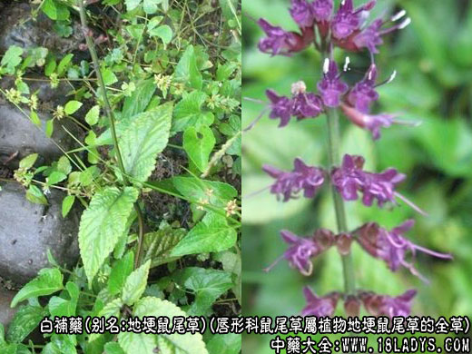

来源：为唇形科鼠尾草属植物地埂鼠尾草的全草。
原植物：地埂鼠尾草，又名田芹菜(广东)，山字止(福建毛高)。
形态：一年生草本。茎细长，高20～26cm，略被倒伏的柔毛或近无毛。叶为根出叶，多为单生，间或有分出1片或1对小叶而成复叶，叶柄长2.5～9cm;叶片心状卵圆形，长2～4.3cm，宽1.3～3.6cm，基部心形，边缘具浅波状圆齿，薄纸质，叶面绿色，背面青紫色，复叶的顶生小叶较大，侧生小叶小或成狭片或近于减退，茎生叶很少，间有1～2对，与根叶相同，但较小。轮伞花序6～10花，疏离，组成长10～20cm的顶生总状或总状圆锥花序;花梗与花序轴被短柔毛;花萼筒形，二唇形，上唇半圆状三角形，下唇浅裂成二齿，齿三角形;花冠紫色或白色，长约7mm，冠檐2唇形，上唇直伸，两侧褶合，下唇比上唇长，3裂。能育雄蕊2，伸出花药冠，花丝长1mm，药隔长2.4mm，上臂长1.5mm，向前直伸，二下臂瘦长而弯曲，先端不具药，互相分离。花柱与花冠等长。花盘前方微膨大。小坚果长卵圆形，长约1.5mm，褐色，无毛。花期4～5月。
生境与分布：生于山谷、林下、山顶。分布于台湾、福建、广东。菲律宾也有。
采集：夏、秋季采收，除去杂质，晒干。
贮藏：置干燥处。
性味：辛，平。《贵州草药》：“辛，平。”
功效与作用：补虚益损，强筋壮骨。
主治：虚弱干瘦，头晕目眩，劳伤疼痛。①《贵州草药》：“强筋壮骨，补虚益损。” ②《全国中草药汇编》：“治虚弱干瘦，头晕目眩。” ③《新华本草纲要》：“用于肺病，虚弱干瘦，头晕目眩。”
用法用量：内服：炖肉，15～30g;或浸酒。
临床应用：
食疗：①《中药大辞典》：“治虚弱干瘦，头晕目眩：白补药30g。炖肉吃。”
②《中药大辞典》：“治劳伤疼痛：白补药30g。泡酒服。”